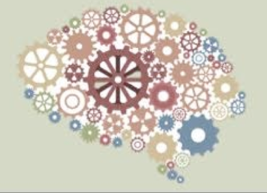
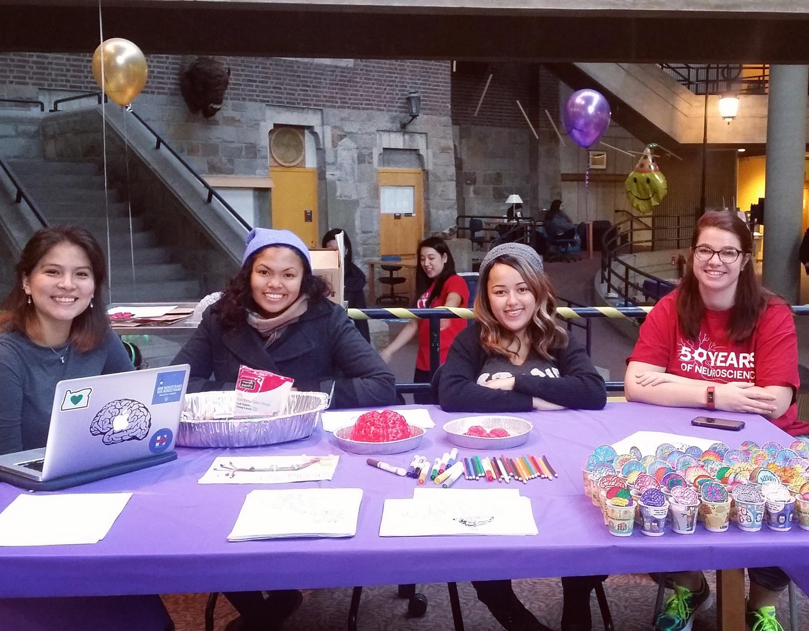
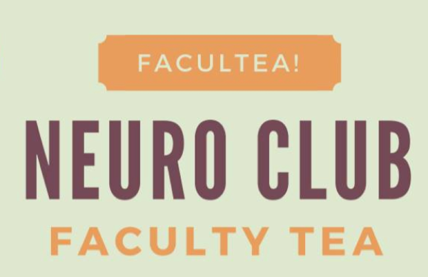

About:Since its founding in 1994, Science Club for Girls (SCFG) has provided the very best in girls-specific programming by connecting girls in K-12 grades, especially those from underrepresented groups, with female mentor-scientists through free science, technology, engineering and math (STEM) programs in a fun, nurturing, interactive environment. Our club-based model fosters both scientific thinking and sisterhood for our youngest participants. Our teen leadership programs give girls the opportunity to be role models, teach young children science, learn life skills, conduct science research in applied settings, and explore careers in science and technology. As of the 2014-15 program year, approximately 1,000 girls participate in SCFG programs in 17+ sites across four communities in eastern Massachusetts (Boston, Cambridge, Lawrence, and Newton). Sites are hosted by schools, community centers, the campuses of colleges and universities, and inside the corporate offices of our partner companies in STEM fields. With fully 80% of the fastest growing jobs in the next decade requiring capabilities in science, technology, engineering and mathematics, our efforts to increase interest and promote career awareness in these fields are essential to ensure the economic security for underrepresented groups and their communities. Out-of-school-time programs like Science Club for Girls are incredibly important to narrowing the achievement gap and to assuring the long-term economic competitiveness for the state and the country, as outlined in the MA Governor’s Plan for Excellence in STEM Education and in President Obama’s Educate to Innovate campaign, including the Change the Equation initiative. Our work and our organization have been recognized by national and local organizations.
Our Mission:Science Club for Girls envisions catalyzing a fully diverse and inclusive STEM community. Our mission is to “foster excitement, confidence, and literacy in STEM for girls, particularly from underrepresented communities, by providing free, experiential programs and by maximizing meaningful interactions with women mentors in science, technology, engineering, and mathematics.”
My Summary(PDF)
"We Need More Women in Tech..."-The Atlantic
"Why It's Crucial to Get More Women into Science"-National Geographic
"Why are there still so few women in science?-NY Times
"Encouraging Girls in Math and Science..."-High Ability Studies
"Locally Based Science Mentorship Program"-School Science and Math
"Girls and Science"-JRST
"Bringing up Girls in Science..."-J.Sci.Edu.Tech
"Science Faculty's Subtle Gender Biases..."-PNAS
"The Wrong Way to Teach Math"-NY Times
Unit Rationale: In this curriculum, the girls will learn about the basic chemical processes that occur within living organisms. They will come to understand how the major biological macromolecules give rise to the processes carried out by cells and organisms, and demonstrate these principles through interactive demonstrations and experiments.
Session 1:Atoms and Molecules
Session 2: The Cell
Session 3:Lipids and Membranes
Session 4:Proteins and Enzymes
Session 5:Carbohydrates p.I: Building Them Up
Session 6:Carbohydrates p.II: Breaking Them Down
Session 7:Nucleic Acids
About:SeedKit (Science Education Equity Development Kit) is a practical experimental laboratory resource for secondary school students in low-resource classrooms. The kit itself is a low-cost, reusable, sustainable, and self-contained laboratory that provides essential science materials to assist teaching and learning for all students. The primary focus of SeedKit is to provide more opportunities for women and girls to have access to experimentation design and implementation and assist in efforts of including more women and girls in the field of STEM.
Mission:The purpose of the Neuroscience Club is to create a community for neuroscience majors as well as a forum for all Wellesley students and faculty to talk about neuroscience issues. By organizing activities for the club members, the Neuroscience Club builds a sense of community and a support network for students interested in Neuroscience. Furthermore, through outreach activities, the club aims to foster the wider community's involvement in and enthusiasm for science. The club organizes lectures, symposiums, science fairs, and other events, and partners with other science organizations on campus and beyond to attempt to share with the larger community how important, interesting, and fun neuroscience really is!
Facebook PageCognitive Sciences Meetup/DiscussionDecember 2016
Science Club for Girls Science FairNovember 2016
Faculty Tea with Dr. Sara WassermanNovember 2016
Organization FairSeptember 2016
Patterson SymposiumApril 2016
Featuring: Rebecca Saxe,PhD